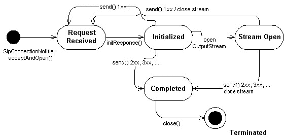

|
||||||||||
| PREV CLASS NEXT CLASS | FRAMES NO FRAMES | |||||||||
| SUMMARY: NESTED | FIELD | CONSTR | METHOD | DETAIL: FIELD | CONSTR | METHOD | |||||||||
SipServerConnection represents SIP server transaction.
SipServerConnection is created by the SipConnectionNotifier
when a new request is received.
The SipServerConnection has following state chart:

initResponse
openContentInputStream
addHeader
setHeader
removeHeader
setReasonPhrase
openContentOutputStream
send
OutputStream and SipConnection.send
getHeader
getHeaders
getRequestURI
getMethod
getStatusCode
getReasonPhrase
getDialog
close // causes state transition to Terminated state
public receiveMessage() {
SipConnectionNotifier scn = null;
SipServerConnection ssc = null;
String method = null;
try {
// Open SIP server connection and listen to port 5060
scn = (SipConnectionNotifier) Connector.open("sip:5060");
// block and wait for incoming request.
// SipServerConnection is establised and returned
// when new request is received.
ssc = scn.acceptAndOpen();
// what was the SIP method
method = ssc.getMethod();
if(method.equals("MESSAGE")) {
// read the content of the MESSAGE
String contentType = ssc.getHeader("Content-Type");
if((contentType != null) && contentType.equals("text/plain")) {
InputStream is = ssc.openContentInputStream();
int ch;
// read content
while ((ch = is.read()) != -1) {
...
}
}
// initialize SIP 200 OK and send it back
ssc.initResponse(200);
ssc.send();
ssc.close();
}
} catch(Exception ex) {
// handle IOException, InterruptedIOException, SecurityException
// or SipException
}
}
SipConnectionNotifier,
SipServerConnectionListener,
SipClientConnection| Method Summary | |
void |
initResponse(int code)
Initializes SipServerConnection with a specific SIP response to the received request. |
void |
setReasonPhrase(java.lang.String phrase)
Changes the default reason phrase. |
| Methods inherited from interface javax.microedition.sip.SipConnection |
addHeader, getDialog, getHeader, getHeaders, getMethod, getReasonPhrase, getRequestURI, getStatusCode, openContentInputStream, openContentOutputStream, removeHeader, send, setHeader |
| Methods inherited from interface javax.microedition.io.Connection |
close |
| Method Detail |
public void initResponse(int code)
throws java.lang.IllegalArgumentException,
SipException
The procedure of generating the response and header fields is defined in RFC 3261 [1] p. 49-50. At least following information is set by the method:
From // MUST equal the From header field of the request
Call-ID // MUST equal the Call-ID header field of the request
CSeq // MUST equal the CSeq field of the request
Via // MUST equal the Via header field values in the request
and MUST maintain the same ordering
To // MUST Copy if exists in the original request,
'tag' MUST be added if not present
Furthermore, if the system has automatically sent the "100 Trying" response, the 100 response initialized
and sent by the user is just ignored.
code - Response status code 1xx - 6xx
java.lang.IllegalArgumentException - if the status code is out of range 100-699 (RFC 3261 p.28-29)
SipException - INVALID_STATE if the response can not be initialized, because of wrong state.
public void setReasonPhrase(java.lang.String phrase)
throws SipException,
java.lang.IllegalArgumentException
java.lang.IllegalArgumentException - if the reason phrase is illegal.
SipException - INVALID_STATE if the response can not be initialized, because of wrong state. INVALID_OPERATION if the reason phrase can not be set.
|
||||||||||
| PREV CLASS NEXT CLASS | FRAMES NO FRAMES | |||||||||
| SUMMARY: NESTED | FIELD | CONSTR | METHOD | DETAIL: FIELD | CONSTR | METHOD | |||||||||